1 03.04. Οι τριγωνομετρικές συναρτήσεις
1.1 Περιοδική συνάρτηση
1.2 Παράδειγμα 1: Ύψος καμπίνας σε τροχό λούνα παρκ (ρόδα)
Περιγραφή:
Ένας επισκέπτης ανεβαίνει σε μια καμπίνα ενός τροχού λούνα παρκ (ρόδας), ο οποίος περιστρέφεται συνεχώς με σταθερή ταχύτητα. Η γραφική παράσταση του ύψους της καμπίνας από το έδαφος ως συνάρτηση του χρόνου \(t\) (σε λεπτά, \(\text{min}\)) φαίνεται παρακάτω:
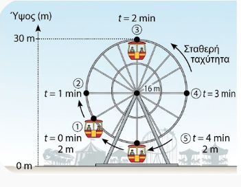
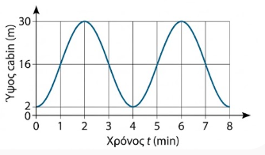
Τη χρονική στιγμή \(t = 0\text{ min}\), η καμπίνα βρίσκεται στο χαμηλότερο σημείο, σε ύψος \(2\text{ m}\).
Σταδιακά ανεβαίνει και τη χρονική στιγμή \(t = 2\text{ min}\) φτάνει στο μέγιστο ύψος των \(30\text{ m}\).
Στη συνέχεια κατεβαίνει και τη χρονική στιγμή \(t = 4\text{ min}\) επιστρέφει ξανά στο χαμηλότερο σημείο των \(2\text{ m}\).
Η διαδικασία αυτή επαναλαμβάνεται ακριβώς με τον ίδιο τρόπο.
Μαθηματική εξήγηση:
Παρατηρούμε ότι κάθε \(4\text{ min}\) η καμπίνα επαναλαμβάνει την ίδια ακριβώς κίνηση.
Αυτό σημαίνει ότι σε όποιο ύψος βρίσκεται η καμπίνα σε κάποια χρονική στιγμή \(t\), στο ίδιο ύψος θα βρίσκεται και τη χρονική στιγμή: \[t + 4\text{ min}\] καθώς και τη χρονική στιγμή: \[t - 4\text{ min}\]
Επομένως, η συνάρτηση \(h(t)\) που εκφράζει το ύψος της καμπίνας από το έδαφος ως συνάρτηση του χρόνου \(t\), έχει τις ίδιες τιμές τις χρονικές στιγμές \(t\), \(t + 4\) και \(t - 4\): \[h(t) = h(t + 4) = h(t - 4)\]
Λέμε ότι η συνάρτηση αυτή είναι περιοδική με περίοδο \(T = 4\text{ min}\).
1.3 Παράδειγμα 2: Φωτεινότητα (ή αναλαμπές) ενός φάρου
Περιγραφή:
Ένας περιστρεφόμενος ναυτικός φάρος εκπέμπει φωτεινές αναλαμπές προς ένα συγκεκριμένο σημείο παρατήρησης στη θάλασσα. Η ένταση του φωτός \(I(t)\) (σε μονάδες μέτρησης έντασης) που καταγράφεται από έναν παρατηρητή ως συνάρτηση του χρόνου \(t\) (σε δευτερόλεπτα, \(\text{s}\)) μεταβάλλεται ρυθμικά:
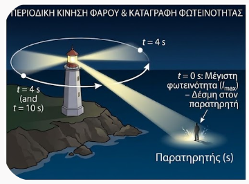
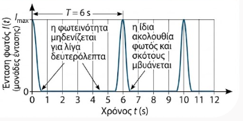
Τη χρονική στιγμή \(t = 0\text{ s}\), καταγράφεται η μέγιστη φωτεινότητα (η δέσμη φωτός στοχεύει ακριβώς τον παρατηρητή).
Καθώς ο φάρος περιστρέφεται, η φωτεινότητα μηδενίζεται για λίγα δευτερόλεπτα.
Τη χρονική στιγμή \(t = 6\text{ s}\), η φωτεινή δέσμη περνάει ξανά από το ίδιο σημείο και καταγράφεται πάλι η μέγιστη φωτεινότητα.
Η ίδια ακολουθία φωτός και σκότους επαναλαμβάνεται συνεχώς.
Μαθηματική εξήγηση:
Παρατηρούμε ότι κάθε \(6\text{ s}\) η ένταση του φωτός επαναλαμβάνει τον ίδιο ακριβώς κύκλο.
Αυτό σημαίνει ότι όποια ένταση καταγράφεται σε μια χρονική στιγμή \(t\), η ίδια ένταση θα καταγράφεται και τη χρονική στιγμή: \[t + 6\text{ s}\] καθώς και τη χρονική στιγμή: \[t - 6\text{ s}\]
Επομένως, για τη συνάρτηση της έντασης \(I(t)\) ισχύει: \[I(t) = I(t + 6) = I(t - 6)\]
Λέμε πάλι ότι η συνάρτηση που εκφράζει την ένταση του φωτός με τη βοήθεια του χρόνου \(t\) είναι περιοδική με περίοδο \(T = 6\text{ s}\).
1.4 Περιοδική Συνάρτηση
Τι λέμε Περιοδική συνάρτηση
Μία συνάρτηση \(f\) με πεδίο ορισμού ένα σύνολο \(A\) λέγεται περιοδική, όταν υπάρχει πραγματικός αριθμός \(T > 0\) τέτοιος, ώστε για κάθε \(x \in A\) να ισχύουν:
\(x + T \in A\) και \(x - T \in A\)
\(f(x + T) = f(x - T) = f(x)\)
Ο πραγματικός αριθμός \(T\) ονομάζεται περίοδος της συνάρτησης \(f\). Η μικρότερη θετική τιμή του \(T\) ονομάζεται πρωτεύουσα (ή βασική) περίοδος της συνάρτησης.
1.5 Τριγωνομετρικές Συναρτήσεις Πραγματικών Αριθμών
Στη Μαθηματική Ανάλυση, οι τριγωνομετρικοί αριθμοί ορίζονται για κάθε πραγματικό αριθμό \(x\), θεωρώντας ότι το \(x\) παριστάνει το μέτρο μιας γωνίας σε ακτίνια (\(x \text{ rad}\)):
\(f(x) = ημ x\)
Συνάρτηση Ημίτονο (\(f(x) = ημ x\)): Αντιστοιχίζει κάθε \(x \in \mathbb{R}\) στο \(ημ(x \text{ rad})\).
Πεδίο ορισμού: \(A = \mathbb{R}\)
Σύνολο τιμών: \(f(A) = [-1, 1]\)
Περίοδος: \(T = 2\pi\)
Επειδή \(ημ(ω + 360^o) = ημ(ω - 360^o) = ημω\), για κάθε \(x ∈ \mathbb{R}\) θα ισχύει:
\(ημ(x + 2π) = ημ(x - 2π) = ημx\).
\(f(x) = συν x\)
Συνάρτηση Συνημίτονο (\(f(x) = συν x\)): Αντιστοιχίζει κάθε \(x \in \mathbb{R}\) στο \(συν(x \text{ rad})\).
Πεδίο ορισμού: \(A = \mathbb{R}\)
Σύνολο τιμών: \(f(A) = [-1, 1]\)
Περίοδος: \(T = 2\pi\)
\(f(x) = εφ x\)
Συνάρτηση Εφαπτομένη (\(f(x) = εφ x = \dfrac{ημ x}{συν x}\)):
Πεδίο ορισμού: \(A = \{x \in \mathbb{R} \mid συν x \neq 0\} = \{x \in \mathbb{R} \mid x \neq k\pi + \dfrac{\pi}{2}, k \in \mathbb{Z}\}\)
Σύνολο τιμών: \(f(A) = \mathbb{R}\)
Περίοδος: \(T = \pi\)
Επειδή για κάθε \(x ∈ Α\) ισχύει
\(εφ(x + π) = εφ(x - π) = εφx\)
\(f(x) = σφ x\)
Συνάρτηση Συνεφαπτομένη (\(f(x) = σφ x = \dfrac{συν x}{ημ x}\)):
Πεδίο ορισμού: \(A = \{x \in \mathbb{R} \mid ημ x \neq 0\} = \{x \in \mathbb{R} \mid x \neq k\pi, k \in \mathbb{Z}\}\)
Σύνολο τιμών: \(f(A) = \mathbb{R}\)
Περίοδος: \(T = \pi\)
1.6 Μελέτη της Συνάρτησης \(f(x) = ημ x\)
Ακολουθήστε τις οδηγίες
Αλλάξτε την γωνία (x rad) μέσω του δρομέα x. (Επιλέξτε τον δρομέα και μετά με > ή < αλλάξτε την τιμή του x)
Διαπιστώστε - διερευνήστε όσα αναφέρονται παρακάτω.
Πεδίο Ορισμού & Σύνολο Τιμών: \(A = \mathbb{R}\) και \(f(A) = [-1, 1]\).
Συμμετρία: Είναι περιττή συνάρτηση, διότι \(ημ(-x) = -ημ x\) για κάθε \(x \in \mathbb{R}\). Η γραφική της παράσταση έχει κέντρο συμμετρίας την αρχή των αξόνων \(O(0,0)\).
Περιοδικότητα: Είναι περιοδική με βασική περίοδο \(T = 2\pi\).
Μονοτονία & Ακρότατα στο \([0, 2\pi]\):
Στο \([0, \dfrac{\pi}{2}]\) είναι γνησίως αύξουσα από το \(0\) έως το \(1\). Παρουσιάζει μέγιστο στο \(x = \dfrac{\pi}{2}\) με τιμή \(1\).
Στο \([\dfrac{\pi}{2}, \dfrac{3\pi}{2}]\) είναι γνησίως φθίνουσα από το \(1\) έως το \(-1\). Παρουσιάζει ελάχιστο στο \(x = \dfrac{3\pi}{2}\) με τιμή \(-1\).
Στο \([\dfrac{3\pi}{2}, 2\pi]\) είναι γνησίως αύξουσα από το \(-1\) έως το \(0\).
Πίνακας Μεταβολών \(f(x) = ημ x\)
| \(x\) | \(0\) | \(\dfrac{\pi}{2}\) | \(\pi\) | \(\dfrac{3\pi}{2}\) | \(2\pi\) |
|---|---|---|---|---|---|
| \(ημ x\) | \(0\) | \(\nearrow\) \(1\) (Μέγ.) | \(\searrow\) \(0\) | \(\searrow\) \(-1\) (Ελάχ.) | \(\nearrow\) \(0\) |
Πίνακας Τιμών \(f(x) = ημ x\)
| \(x\) | \(0\) | \(\dfrac{\pi}{6}\) | \(\dfrac{\pi}{4}\) | \(\dfrac{\pi}{3}\) | \(\dfrac{\pi}{2}\) | \(\pi\) | \(\dfrac{3\pi}{2}\) | \(2\pi\) |
|---|---|---|---|---|---|---|---|---|
| \(ημ x\) | \(0\) | \(\dfrac{1}{2}\) | \(\dfrac{\sqrt{2}}{2}\) | \(\dfrac{\sqrt{3}}{2}\) | \(1\) | \(0\) | \(-1\) | \(0\) |
1.7 Μελέτη της Συνάρτησης \(f(x) = συν x\)
Ακολουθήστε τις οδηγίες
Αλλάξτε την γωνία (x rad) μέσω του δρομέα x. (Επιλέξτε τον δρομέα και μετά με > ή < αλλάξτε την τιμή του x)
Διαπιστώστε - διερευνήστε όσα αναφέρονται παρακάτω.
Πεδίο Ορισμού & Σύνολο Τιμών: \(A = \mathbb{R}\) και \(f(A) = [-1, 1]\).
Συμμετρία: Είναι άρτια συνάρτηση, διότι \(συν(-x) = συν x\) για κάθε \(x \in \mathbb{R}\). Η γραφική της παράσταση έχει άξονα συμμετρίας τον άξονα \(y'y\).
Περιοδικότητα: Είναι περιοδική με βασική περίοδο \(T = 2\pi\).
Μονοτονία & Ακρότατα στο \([0, 2\pi]\):
Στο \([0, \pi]\) είναι γνησίως φθίνουσα από το \(1\) έως το \(-1\). Παρουσιάζει μέγιστο στο \(x = 0\) (\(f(0) = 1\)) και ελάχιστο στο \(x = \pi\) (\(f(\pi) = -1\)).
Στο \([\pi, 2\pi]\) είναι γνησίως αύξουσα από το \(-1\) έως το \(1\). Παρουσιάζει μέγιστο στο \(x = 2\pi\) (\(f(2\pi) = 1\)).
Πίνακας Μεταβολών \(f(x) = συν x\)
| \(x\) | \(0\) | \(\pi\) | \(2\pi\) |
|---|---|---|---|
| \(συν x\) | \(1\) (Μέγ.) | \(\searrow\) \(-1\) (Ελάχ.) | \(\nearrow\) \(1\) (Μέγ.) |
Πίνακας Τιμών \(f(x) = συν x\)
| \(x\) | \(0\) | \(\dfrac{\pi}{6}\) | \(\dfrac{\pi}{4}\) | \(\dfrac{\pi}{3}\) | \(\dfrac{\pi}{2}\) | \(\pi\) | \(\dfrac{3\pi}{2}\) | \(2\pi\) |
|---|---|---|---|---|---|---|---|---|
| \(συν x\) | \(1\) | \(\dfrac{\sqrt{3}}{2}\) | \(\dfrac{\sqrt{2}}{2}\) | \(\dfrac{1}{2}\) | \(0\) | \(-1\) | \(0\) | \(1\) |
1.8 Μελέτη της Συνάρτησης \(f(x) = εφ x\)
Ακολουθήστε τις οδηγίες
Αλλάξτε την γωνία (x rad) μέσω του δρομέα x. (Επιλέξτε τον δρομέα και μετά με > ή < αλλάξτε την τιμή του x)
Διαπιστώστε - διερευνήστε όσα αναφέρονται παρακάτω.
Πεδίο Ορισμού & Σύνολο Τιμών: \(A = \mathbb{R} \setminus \{k\pi + \dfrac{\pi}{2}, k \in \mathbb{Z}\}\) και \(f(A) = \mathbb{R}\).
Συμμετρία: Είναι περιττή συνάρτηση, διότι \(εφ(-x) = -εφ x\). Κέντρο συμμετρίας η αρχή \(O(0,0)\).
Περιοδικότητα: Περιοδική με βασική περίοδο \(T = \pi\).
Μονοτονία & Ασύμπτωτες: Στο ανοικτό διάστημα \((-\dfrac{\pi}{2}, \dfrac{\pi}{2})\) είναι γνησίως αύξουσα. Οι ευθείες \(x = -\dfrac{\pi}{2}\) και \(x = \dfrac{\pi}{2}\) είναι κατακόρυφες ασύμπτωτες της γραφικής της παράστασης.
Πίνακας Μεταβολών \(f(x) = εφ x\) στο \((-\dfrac{\pi}{2}, \dfrac{\pi}{2})\)
| \(x\) | \(-\dfrac{\pi}{2}\) | \(0\) | \(\dfrac{\pi}{2}\) |
|---|---|---|---|
| \(εφ x\) | \(-\infty\) | \(\nearrow\) \(0\) \(\nearrow\) | \(+\infty\) |
Πίνακας Τιμών \(f(x) = εφ x\)
| \(x\) | \(-\dfrac{\pi}{3}\) | \(-\dfrac{\pi}{4}\) | \(-\dfrac{\pi}{6}\) | \(0\) | \(\dfrac{\pi}{6}\) | \(\dfrac{\pi}{4}\) | \(\dfrac{\pi}{3}\) |
|---|---|---|---|---|---|---|---|
| \(εφ x\) | \(-\sqrt{3}\) | \(-1\) | \(-\dfrac{\sqrt{3}}{3}\) | \(0\) | \(\dfrac{\sqrt{3}}{3}\) | \(1\) | \(\sqrt{3}\) |
1.9 Μελέτη της Συνάρτησης \(f(x) = σφ x\)
Ακολουθήστε τις οδηγίες
Αλλάξτε την γωνία (x rad) μέσω του δρομέα x. (Επιλέξτε τον δρομέα και μετά με > ή < αλλάξτε την τιμή του x)
Διαπιστώστε - διερευνήστε όσα αναφέρονται παρακάτω.
Πεδίο Ορισμού & Σύνολο Τιμών: \(A = \mathbb{R} \setminus \{k\pi, k \in \mathbb{Z}\}\) και \(f(A) = \mathbb{R}\).
Συμμετρία: Είναι περιττή συνάρτηση, διότι \(σφ(-x) = -σφ x\).
Περιοδικότητα: Περιοδική με βασική περίοδο \(T = \pi\).
Μονοτονία & Ασύμπτωτες: Στο διάστημα \((0, \pi)\) είναι γνησίως φθίνουσα. Οι ευθείες \(x = 0\) και \(x = \pi\) είναι κατακόρυφες ασύμπτωτες.
Πίνακας Μεταβολών \(f(x) = σφ x\) στο \((0, \pi)\)
| \(x\) | \(0\) | \(\dfrac{\pi}{2}\) | \(\pi\) |
|---|---|---|---|
| \(σφ x\) | \(+\infty\) | \(\searrow\) \(0\) \(\searrow\) | \(-\infty\) |
Πίνακας Τιμών \(f(x) = σφ x\)
| \(x\) | \(\dfrac{\pi}{6}\) | \(\dfrac{\pi}{4}\) | \(\dfrac{\pi}{3}\) | \(\dfrac{\pi}{2}\) | \(\dfrac{2\pi}{3}\) | \(\dfrac{3\pi}{4}\) | \(\dfrac{5\pi}{6}\) |
|---|---|---|---|---|---|---|---|
| \(σφ x\) | \(\sqrt{3}\) | \(1\) | \(\dfrac{\sqrt{3}}{3}\) | \(0\) | \(-\dfrac{\sqrt{3}}{3}\) | \(-1\) | \(-\sqrt{3}\) |
1.10 Μελέτη της Συνάρτησης \(f(x) = \rho \cdot ημ(\omega x)\) (\(\rho, \omega > 0\))
Ακολουθήστε τις οδηγίες
Αλλάξτε την γωνία (x rad) μέσω του δρομέα x. (Επιλέξτε τον δρομέα και μετά με > ή < αλλάξτε την τιμή του x)
Αλλάξτε το ρ (\(ρ \in \mathbb{R^+}\)) μέσω του δρομέα ρ
Αλλάξτε το ω (\(ω \in \mathbb{R^+}\)) μέσω του δρομέα ω
Διαπιστώστε - διερευνήστε όσα αναφέρονται παρακάτω.
Για τη γενικευμένη τριγωνομετρική συνάρτηση \(f(x) = \rho \cdot ημ(\omega x)\) με \(\rho > 0\) και \(\omega > 0\):
Ακρότατα: Το \(\rho\) καθορίζει το πλάτος της συνάρτησης. Έχει μέγιστη τιμή ίση με \(\rho\) και ελάχιστη τιμή ίση με \(-\rho\).
Περίοδος: Το \(\omega\) καθορίζει τη συχνότητα. Η βασική περίοδος είναι \(T = \dfrac{2\pi}{\omega}\).
Πίνακας Μεταβολών \(f(x) = \rho \cdot ημ(\omega x)\) σε μία περίοδο \([0, \dfrac{2\pi}{\omega}]\)
| \(x\) | \(0\) | \(\dfrac{\pi}{2\omega}\) | \(\dfrac{\pi}{\omega}\) | \(\dfrac{3\pi}{2\omega}\) | \(\dfrac{2\pi}{\omega}\) |
|---|---|---|---|---|---|
| \(f(x)\) | \(0\) | \(\nearrow\) \(\rho\) (Μέγ.) | \(\searrow\) \(0\) | \(\searrow\) \(-\rho\) (Ελάχ.) | \(\nearrow\) \(0\) |
1.11 Παραδείγματα Εφαρμογής
1ο Παράδειγμα:
Μελέτη & Γραφική Παράσταση της \(f(x) = 4ημ x\)
Λύση
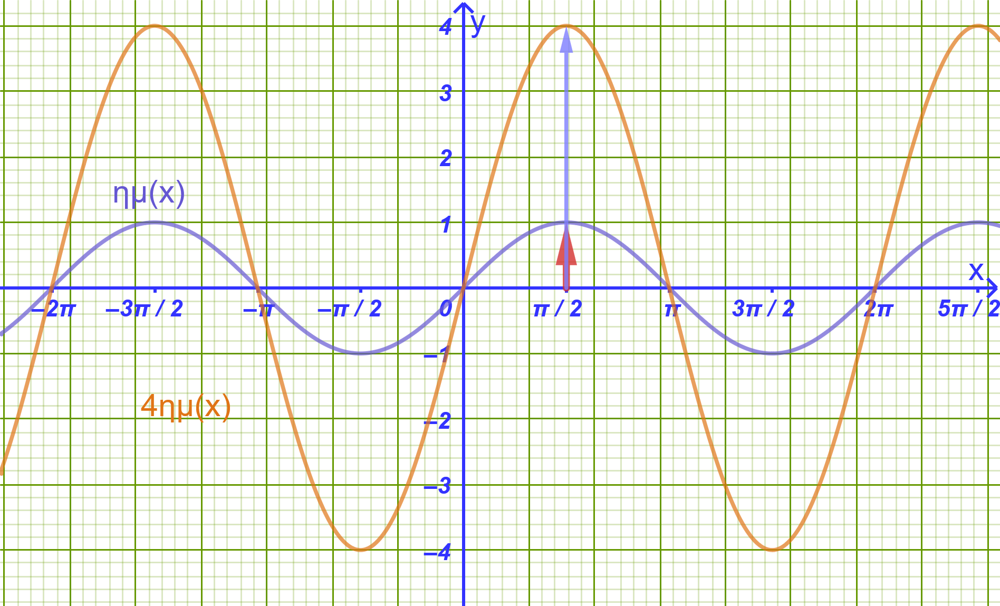
Χαρακτηριστικά: Έχει πλάτος \(\rho = 4\) και περίοδο \(T = 2\pi\). Μέγιστο το \(4\) (στο \(x = \dfrac{\pi}{2}\)) και ελάχιστο το \(-4\) (στο \(x = \dfrac{3\pi}{2}\)).
Πίνακας Τιμών στο \([0, 2\pi]\):
| \(x\) | \(0\) | \(\dfrac{\pi}{2}\) | \(\pi\) | \(\dfrac{3\pi}{2}\) | \(2\pi\) |
|---|---|---|---|---|---|
| \(ημ x\) | \(0\) | \(1\) | \(0\) | \(-1\) | \(0\) |
| \(4ημ x\) | \(0\) | \(4\) | \(0\) | \(-4\) | \(0\) |
- Γραφική Παράσταση: Είναι μια ημιτονοειδής καμπύλη με τεταγμένες 4 φορές μεγαλύτερες από τις αντίστοιχες της \(y = ημ x\).
2ο Παράδειγμα:
Μελέτη & Γραφική Παράσταση της \(f(x) = ημ(4x)\)
Λύση
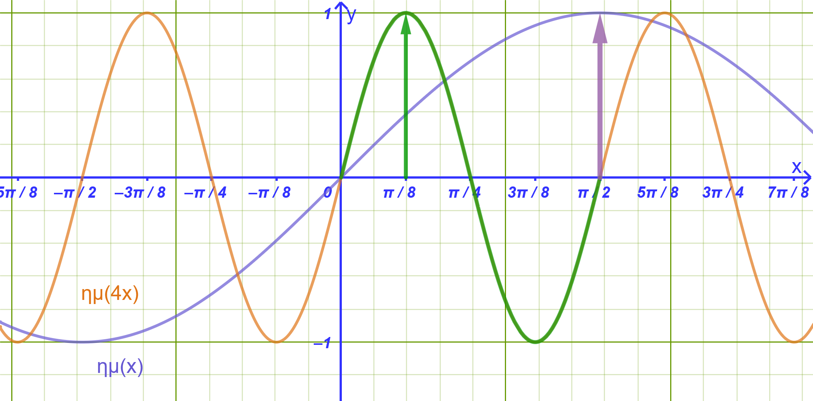
Χαρακτηριστικά: Έχει πλάτος \(\rho = 1\) και περίοδο \(T = \dfrac{2\pi}{4} = \dfrac{\pi}{2}\).
Πίνακας Τιμών σε διάστημα μιας περιόδου \([0, \dfrac{\pi}{2}]\):
| \(x\) | \(0\) | \(\dfrac{\pi}{8}\) | \(\dfrac{\pi}{4}\) | \(\dfrac{3\pi}{8}\) | \(\dfrac{\pi}{2}\) |
|---|---|---|---|---|---|
| \(4x\) | \(0\) | \(\dfrac{\pi}{2}\) | \(\pi\) | \(\dfrac{3\pi}{2}\) | \(2\pi\) |
| \(ημ(4x)\) | \(0\) | \(1\) | \(0\) | \(-1\) | \(0\) |
- Γραφική Παράσταση: Η κύρια περίοδος συμπιέζεται οριζόντια στο διάστημα \([0, \dfrac{\pi}{2}]\).
3ο Παράδειγμα:
Μελέτη & Γραφική Παράσταση της \(f(x) = 2συν(3x)\)
Λύση
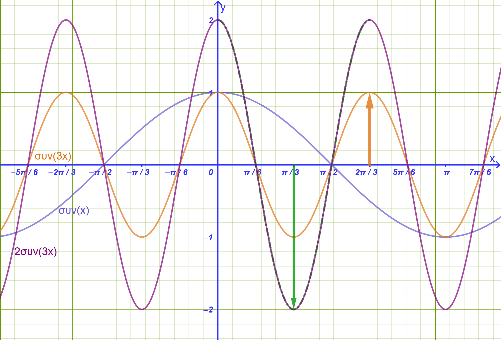
Χαρακτηριστικά: Έχει πλάτος \(\rho = 2\) (μέγιστο \(2\), ελάχιστο \(-2\)). Η περίοδός της είναι \(T = \dfrac{2\pi}{3}\).
Πίνακας Τιμών στο \([0, \dfrac{2\pi}{3}]\):
| \(x\) | \(0\) | \(\dfrac{\pi}{6}\) | \(\dfrac{\pi}{3}\) | \(\dfrac{\pi}{2}\) | \(\dfrac{2\pi}{3}\) |
|---|---|---|---|---|---|
| \(3x\) | \(0\) | \(\dfrac{\pi}{2}\) | \(\pi\) | \(\dfrac{3\pi}{2}\) | \(2\pi\) |
| \(συν(3x)\) | \(1\) | \(0\) | \(-1\) | \(0\) | \(1\) |
| \(2συν(3x)\) | \(2\) | \(0\) | \(-2\) | \(0\) | \(2\) |
1.12 Λυμένες ασκήσεις
Άσκηση 1: Μελέτη Συνάρτησης με Διπλάσιο Τόξο
Δίνεται η συνάρτηση \(f(x) = 4ημ(2x) - 1\).
Να βρεθεί η βασική περίοδος \(T\) της συνάρτησης.
Να βρεθεί η μέγιστη τιμή \(M\) και η ελάχιστη τιμή \(m\) της \(f\).
Να υπολογιστούν οι τιμές \(f\left(\dfrac{\pi}{12}\right)\) και \(f\left(\dfrac{\pi}{4}\right)\).
Αναλυτική Λύση:
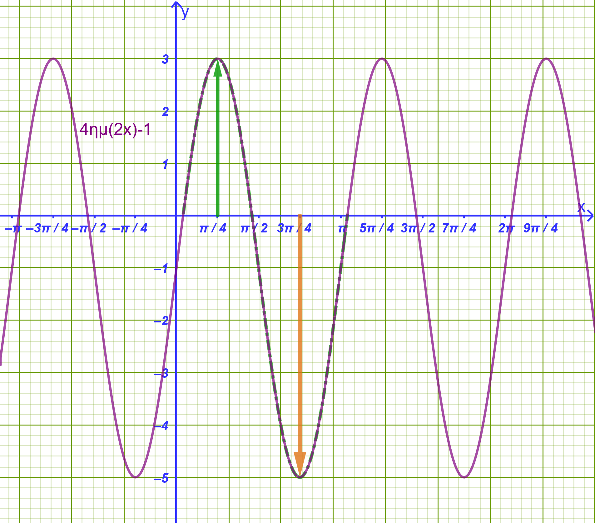
Η συνάρτηση είναι της μορφής \(f(x) = \rhoημ(\omega x) + c\) με \(\omega = 2\). Η βασική περίοδος υπολογίζεται από τον τύπο \(T = \dfrac{2\pi}{\omega} = \dfrac{2\pi}{2} = \mathbf{\pi}\).
Για κάθε \(x \in \mathbb{R}\) ισχύει: \[-1 \le ημ(2x) \le 1 \implies -4 \le 4ημ(2x) \le 4 \implies -5 \le 4ημ(2x) - 1 \le 3\] Άρα η ελάχιστη τιμή είναι \(m = -5\) και η μέγιστη τιμή είναι \(M = 3\).
Υπολογισμός τιμών:
- \(f\left(\dfrac{\pi}{12}\right) = 4ημ\left(2 \cdot \dfrac{\pi}{12}\right) - 1 = 4ημ\left(\dfrac{\pi}{6}\right) - 1 = 4 \cdot \dfrac{1}{2} - 1 = 2 - 1 = \mathbf{1}\).
- \(f\left(\dfrac{\pi}{4}\right) = 4ημ\left(2 \cdot \dfrac{\pi}{4}\right) - 1 = 4ημ\left(\dfrac{\pi}{2}\right) - 1 = 4 \cdot 1 - 1 = \mathbf{3}\).
Άσκηση 2: Μελέτη Συνάρτησης με Υποδιαίρεση Τόξου (Μισό Τόξο)
Δίνεται η συνάρτηση \(g(x) = -3συν\left(\dfrac{x}{2}\right) + 2\).
Να βρεθεί η βασική περίοδος \(T\) της \(g\).
Να βρεθούν τα ακρότατα της συνάρτησης (μέγιστη και ελάχιστη τιμή).
Να εξεταστεί αν η συνάρτηση είναι άρτια ή περιττή.
Αναλυτική Λύση:
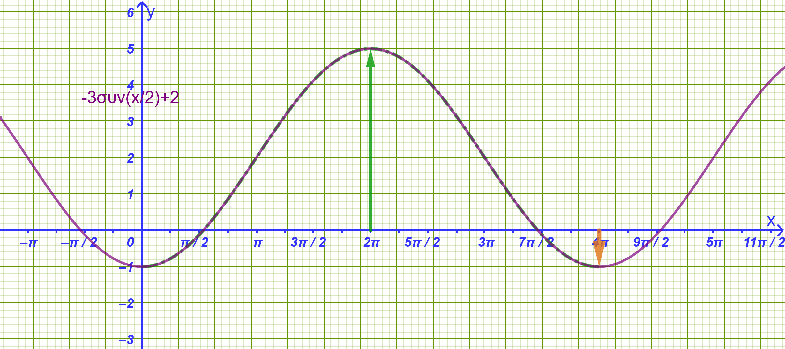
Ο συντελεστής της μεταβλητής είναι \(\omega = \dfrac{1}{2}\).
Η περίοδος είναι \(T = \dfrac{2\pi}{1/2} = \mathbf{4\pi}\).
Για κάθε \(x \in \mathbb{R}\) ισχύει: \[-1 \le συν\left(\dfrac{x}{2}\right) \le 1 \implies -3 \le -3συν\left(\dfrac{x}{2}\right) \le 3 \implies -1 \le -3συν\left(\dfrac{x}{2}\right) + 2 \le 5\]
Άρα η ελάχιστη τιμή είναι \(m = -1\) και η μέγιστη \(M = 5\).
Το πεδίο ορισμού είναι το \(A = \mathbb{R}\) (συμμετρικό ως προς το \(0\)). \(g(-x) = -3συν\left(-\dfrac{x}{2}\right) + 2 = -3συν\left(\dfrac{x}{2}\right) + 2 = g(x)\), διότι το συνημίτονο είναι άρτια συνάρτηση (\(συν(-\theta) = συν\theta\)).
Άρα η συνάρτηση \(g\) είναι άρτια.
Άσκηση 3: Συνάρτηση Εφαπτομένης με Πολλαπλάσιο Τόξο
Δίνεται η συνάρτηση \(h(x) = εφ(3x)\).
Να βρεθεί το πεδίο ορισμού της συνάρτησης \(h\).
Να βρεθεί η βασική περίοδος \(T\) της \(h\).
Να υπολογιστεί η τιμή \(h\left(\dfrac{\pi}{12}\right)\) και \(h\left(\dfrac{\pi}{9}\right)\).
Αναλυτική Λύση:
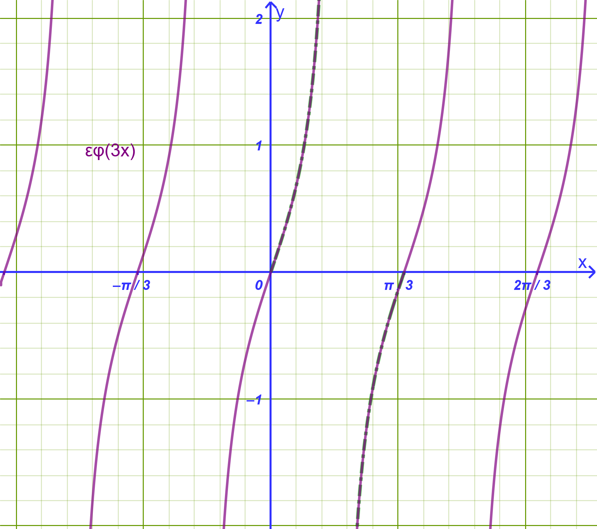
Η συνάρτηση εφαπτομένη ορίζεται όταν το όρισμά της δεν μηδενίζει το συνημίτονο: \[3x \neq k\pi + \dfrac{\pi}{2} \iff x \neq \dfrac{k\pi}{3} + \dfrac{\pi}{6}, \quad k \in \mathbb{Z}\]
Πεδίο ορισμού: \(A = \mathbb{R} \setminus \left\{\dfrac{k\pi}{3} + \dfrac{\pi}{6}, k \in \mathbb{Z}\right\}\).
Η βασική περίοδος της εφαπτομένης με συντελεστή \(\omega = 3\) είναι \(T = \dfrac{\pi}{\omega} = \mathbf{\dfrac{\pi}{3}}\).
Υπολογισμός τιμών:
\(h\left(\dfrac{\pi}{12}\right) = εφ\left(3 \cdot \dfrac{\pi}{12}\right) = εφ\left(\dfrac{\pi}{4}\right) = \mathbf{1}\).
\(h\left(\dfrac{\pi}{9}\right) = εφ\left(3 \cdot \dfrac{\pi}{9}\right) = εφ\left(\dfrac{\pi}{3}\right) = \mathbf{\sqrt{3}}\).
Άσκηση 4: Σύγκριση Περιόδων & Πλάτους Συναρτήσεων
Δίνονται οι συναρτήσεις \(f(x) = 2ημ(4x)\) και \(g(x) = 5συν\left(\dfrac{x}{3}\right)\).
Να βρεθούν οι βασικές περίοδοι \(T_f\) και \(T_g\) των δύο συναρτήσεων.
Να βρεθούν τα πλάτη \(\rho_f\) και \(\rho_g\) των δύο συναρτήσεων.
Αναλυτική Λύση:
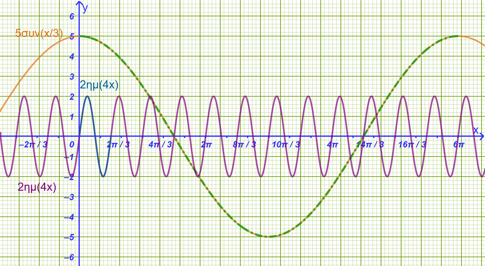
Για την \(f(x) = 2ημ(4x)\): \(\omega_1 = 4 \implies T_f = \dfrac{2\pi}{4} = \mathbf{\dfrac{\pi}{2}}\).
Για την \(g(x) = 5συν\left(\dfrac{x}{3}\right)\): \(\omega_2 = \dfrac{1}{3} \implies T_g = \dfrac{2\pi}{1/3} = \mathbf{6\pi}\).
Παρατηρούμε ότι \(T_g = 12 \cdot T_f\), δηλαδή η \(g\) έχει \(12\) φορές μεγαλύτερη περίοδο από την \(f\).
Το πλάτος της \(f\) είναι \(\rho_f = 2\) (με μέγιστο \(2\) και ελάχιστο \(-2\)).
Το πλάτος της \(g\) είναι \(\rho_g = 5\) (με μέγιστο \(5\) και ελάχιστο \(-5\)).
Άσκηση 5: Προσδιορισμός Παραμέτρων Συνάρτησης \(f(x) = \rhoημ(\omega x)\)
Μια συνάρτηση της μορφής \(f(x) = \rhoημ(\omega x)\) με \(\rho > 0\) και \(\omega > 0\) έχει μέγιστη τιμή \(M = 3\) και περίοδο \(T = \dfrac{2\pi}{5}\).
Να προσδιοριστούν οι παράμετροι \(\rho\) και \(\omega\).
Να υπολογιστούν οι τιμές της συνάρτησης στις θέσεις \(x_1 = \dfrac{\pi}{10}\) και \(x_2 = \dfrac{\pi}{30}\).
Αναλυτική Λύση:
Επειδή \(\rho > 0\), η μέγιστη τιμή της \(f(x)\) ισούται με \(M = \rho\). Δίνεται \(M = 3\), συνεπώς \(\rho = 3\).
Η περίοδος δίνεται από τον τύπο \(T = \dfrac{2\pi}{\omega}\). Δίνεται \(T = \dfrac{2\pi}{5} \implies \dfrac{2\pi}{\omega} = \dfrac{2\pi}{5} \iff \mathbf{\omega = 5}\).
Άρα ο τύπος της συνάρτησης είναι: \(f(x) = 3ημ(5x)\).
Υπολογισμός τιμών:
\(f\left(\dfrac{\pi}{10}\right) = 3ημ\left(5 \cdot \dfrac{\pi}{10}\right) = 3ημ\left(\dfrac{\pi}{2}\right) = 3 \cdot 1 = \mathbf{3}\).
\(f\left(\dfrac{\pi}{30}\right) = 3ημ\left(5 \cdot \dfrac{\pi}{30}\right) = 3ημ\left(\dfrac{\pi}{6}\right) = 3 \cdot \dfrac{1}{2} = \mathbf{\dfrac{3}{2}}\).
Άσκηση 6: Ευρεση Σταθεράς & Ακροτάτων Συνάρτησης \(f(x) = 2συν(3x) + k\)
Δίνεται η συνάρτηση \(f(x) = 2συν(3x) + k\), της οποίας η γραφική παράσταση διέρχεται από το σημείο \(A\left(\dfrac{\pi}{9}, 2\right)\).
Να υπολογιστεί η σταθερά \(k \in \mathbb{R}\).
Να βρεθεί η περίοδος \(T\), η μέγιστη τιμή \(M\) και η ελάχιστη τιμή \(m\) της \(f\).
Αναλυτική Λύση:
Επειδή το σημείο \(A\left(\dfrac{\pi}{9}, 2\right)\) ανήκει στη γραφική παράσταση της \(f\), ισχύει \(f\left(\dfrac{\pi}{9}\right) = 2\): \[2συν\left(3 \cdot \dfrac{\pi}{9}\right) + k = 2 \iff \\ 2συν\left(\dfrac{\pi}{3}\right) + k = 2 \iff \\ 2 \cdot \dfrac{1}{2} + k = 2 \iff 1 + k = 2 \iff \mathbf{k = 1}\]
Άρα ο τύπος της συνάρτησης είναι \(f(x) = 2συν(3x) + 1\).
Ο συντελεστής είναι \(\omega = 3 \implies T = \mathbf{\dfrac{2\pi}{3}}\).
Για κάθε \(x \in \mathbb{R}\) ισχύει: \[-1 \le συν(3x) \le 1 \implies -2 \le 2συν(3x) \le 2 \implies -1 \le 2συν(3x) + 1 \le 3\]
Άρα η ελάχιστη τιμή είναι \(m = -1\) και η μέγιστη τιμή είναι \(M = 3\).
1.13 Ασκήσεις και Προβλήματα Εμπέδωσης
1.13.1 Κατηγορία Α: Περίοδος & Ακρότατα Συναρτήσεων
Να βρεθεί η περίοδος, η μέγιστη και η ελάχιστη τιμή των παρακάτω συναρτήσεων: \[\text{α) } f(x) = 5ημ(2x), \quad \text{β) } g(x) = -3συν(4x), \quad \text{γ) } h(x) = 2εφ(3x)\]
Να προσδιοριστεί η περίοδος των συναρτήσεων: \[\text{α) } f(x) = ημ\left(\dfrac{x}{3}\right), \quad \text{β) } g(x) = συν\left(\dfrac{2x}{5}\right)\]
Αναγνώριση εξίσωσης από τη γραφική παράσταση
Δίνονται οι παρακάτω τριγωνομετρικές συναρτήσεις της μορφής \(f(x) = \rho \cdot \eta\mu(\omega x)\) ή \(f(x) = \rho \cdot \sigma\upsilon\nu(\omega x)\) με \(\rho > 0\) και \(\omega > 0\):
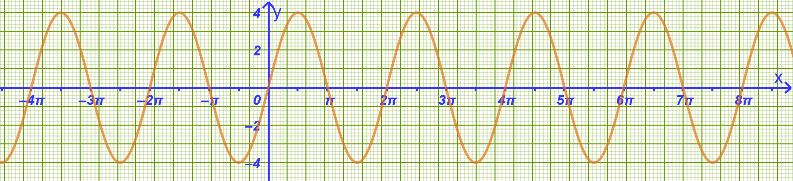
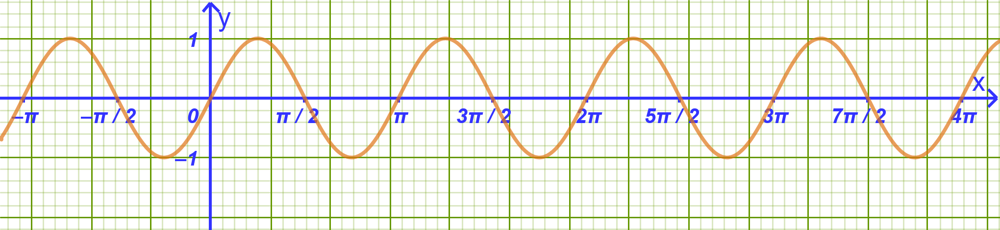
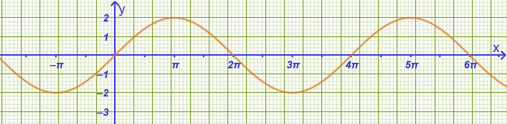
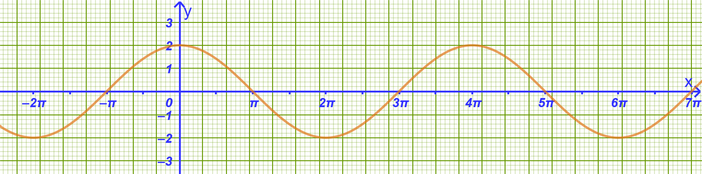
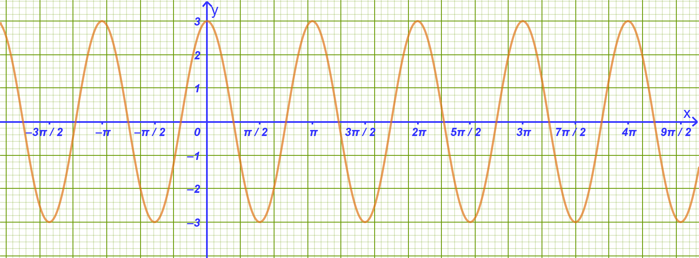
Ερώτημα:
Να βρείτε τον τύπο της κάθε συνάρτησης, προσδιορίζοντας τις παραμέτρους \(\rho\) και \(\omega\), χρησιμοποιώντας τους τύπους:
Μέγιστη τιμή \(= \rho\)
Περίοδος \(T = \dfrac{2\pi}{\omega}\)
Να βρεθούν τα ακρότατα και η περίοδος της συνάρτησης \(f(x) = 3 - 2ημ(5x)\).
Να εξεταστεί ως προς την περιοδικότητα η συνάρτηση \(f(x) = συν^2 x\) και να αποδειχθεί ότι έχει περίοδο \(T = \pi\).
1.13.2 Κατηγορία Β: Γραφικές Παραστάσεις & Μετατοπίσεις
Στο ίδιο σύστημα αξόνων να σχεδιάσετε τις γραφικές παραστάσεις των συναρτήσεων \(f(x) = ημ x\), \(g(x) = 2ημ x\) και \(h(x) = -2ημ x\) για \(x \in [0, 2\pi]\).
Να παρασταθεί γραφικά η συνάρτηση \(f(x) = συν(2x)\) στο διάστημα \([0, \pi]\).
Να σχεδιαστούν οι γραφικές παραστάσεις των συναρτήσεων \(f(x) = ημ x\) και \(g(x) = ημ x + 1\) στο ίδιο σύστημα αξόνων.
Να περιγραφεί πώς προκύπτει η γραφική παράσταση της \(f(x) = 2ημ(x - \dfrac{\pi}{4})\) από την \(g(x) = 2ημ x\).
Να σχεδιαστεί η γραφική παράσταση της \(f(x) = 3συν(\dfrac{x}{2})\) σε διάστημα μίας περιόδου.
1.13.3 Κατηγορία Γ: Εύρεση Τύπου & Παραμέτρων
- Μια συνάρτηση της μορφής \(f(x) = \rho \cdot ημ(\omega x)\) (\(\rho > 0, \omega > 0\)) έχει μέγιστη τιμή \(6\) και περίοδο \(T = \pi\). Να προσδιοριστούν τα \(\rho\) και \(\omega\).
- Εκφώνηση
Δίνεται η συνάρτηση \(f(x) = \alpha \cdot συν(\beta x) + \gamma\). Αν η μέγιστη τιμή της είναι \(5\), η ελάχιστη είναι \(1\) και η περίοδος \(T = 4\pi\), να υπολογιστούν τα \(\alpha, \beta, \gamma > 0\).
Λύση
1. Υπολογισμός του \(\beta\) από την περίοδο
Γνωρίζουμε ότι για τη συνάρτηση \(\sigma\upsilon\nu(\beta x)\) με \(\beta > 0\), η περίοδος \(T\) δίνεται από τον τύπο: \[T = \frac{2\pi}{\beta}\]
Από την υπόθεση έχουμε \(T = 4\pi\), άρα: \[\frac{2\pi}{\beta} = 4\pi \implies \beta = \frac{2\pi}{4\pi} = \frac{1}{2}\]
2. Υπολογισμός των \(\alpha\) και \(\gamma\) από τα ακρότατα
Επειδή \(\alpha > 0\), για κάθε \(x \in \mathbb{R}\) ισχύει: \[-1 \le \sigma\upsilon\nu(\beta x) \le 1\]
Πολλαπλασιάζοντας με \(\alpha > 0\): \[-\alpha \le \alpha \cdot \sigma\upsilon\nu(\beta x) \le \alpha\]
Προσθέτοντας το \(\gamma\): \[-\alpha + \gamma \le \alpha \cdot \sigma\upsilon\nu(\beta x) + \gamma \le \alpha + \gamma\]
Επομένως:
Η μέγιστη τιμή της συνάρτησης είναι: \[\alpha + \gamma = 5 \quad \text{(1)}\]
Η ελάχιστη τιμή της συνάρτησης είναι: \[-\alpha + \gamma = 1 \quad \text{(2)}\]
3. Επίλυση του συστήματος
Προσθέτοντας κατά μέλη τις εξισώσεις (1) και (2): \[(\alpha + \gamma) + (-\alpha + \gamma) = 5 + 1\] \[2\gamma = 6 \implies \gamma = 3\]
Αντικαθιστώντας το \(\gamma = 3\) στην εξίσωση (1): \[\alpha + 3 = 5 \implies \alpha = 2\]
Τελική Απάντηση
Οι τιμές των παραμέτρων είναι: \[\alpha = 2, \quad \beta = \frac{1}{2}, \quad \gamma = 3\]
Η γραφική παράσταση της \(f(x) = \rho \cdot ημ(\omega x)\) διέρχεται από το σημείο \(A(\dfrac{\pi}{6}, 2)\) και έχει μέγιστο το \(4\). Να βρεθούν τα \(\rho\) και \(\omega\).
Να βρεθούν τα σημεία τομής της \(f(x) = 2ημ(2x)\) με τον άξονα \(x'x\) στο διάστημα \([0, \pi]\).
Να εξεταστεί αν η συνάρτηση \(f(x) = εφ(2x - \dfrac{\pi}{3})\) είναι άρτια ή περιττή.
1.13.4 Κατηγορία Δ: Σύνθετα Προβλήματα & Φυσικές Εφαρμογές
- Αρμονική Ταλάντωση: Η απομάκρυνση ενός σώματος που εκτελεί απλή αρμονική ταλάντωση δίνεται από τον τύπο \(x(t) = 0{,}2 \cdot ημ(10\pi t)\) (όπου \(t\) ο χρόνος σε δευτερόλεπτα).
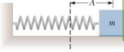
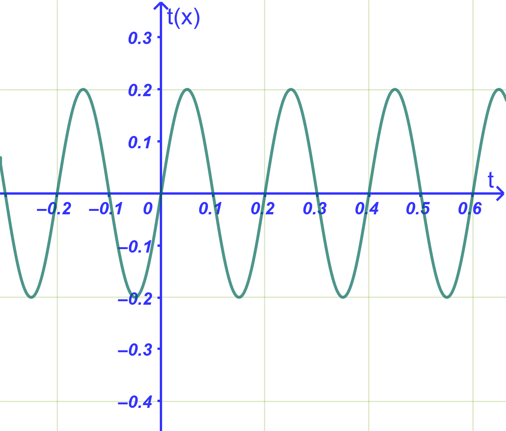
α) Να βρεθεί το πλάτος και η περίοδος της ταλάντωσης.
β) Να υπολογιστεί η απομάκρυνση τις χρονικές στιγμές \(t_1 = \dfrac{1}{20} \text{ s}\) και \(t_2 = \dfrac{1}{60} \text{ s}\).
- Πιστόνι: Η απόσταση ενός πιστονιού σε μέτρα δίνεται από \(x(t) = 0{,}2 + 0{,}1 \cdot ημ(2t)\). Να υπολογιστεί το εύρος κίνησης και η μέγιστη απόστασή του.
Να μελετηθεί ως προς τα ακρότατα και την περίοδο η συνάρτηση \(f(x) = 4ημ x + 3\).
Δίνονται παρακάτω οι γραφικές παραστάσεις των συναρτήσεων:
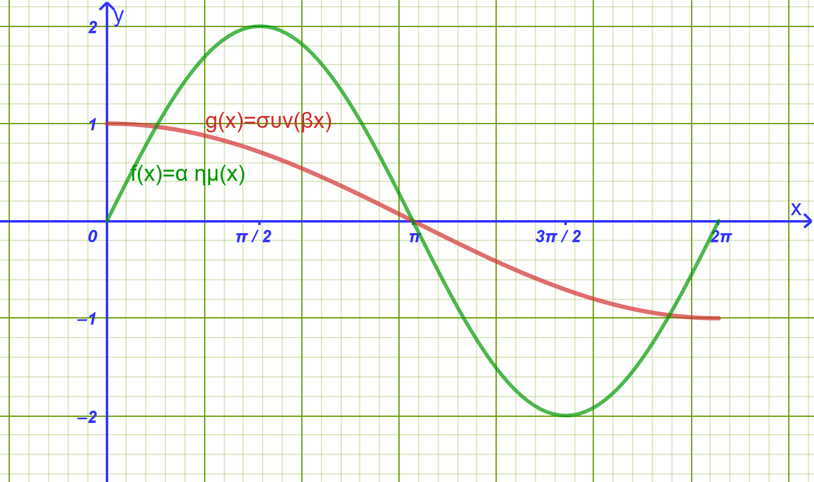
\[f(x) = a \cdot \eta\mu x\] \[g(x) = \sigma\upsilon\nu(βx) \quad (x \in [0^\circ, 360^\circ])\]
Να εξηγήσετε γιατί \(a = 2\) και \(β = \dfrac{1}{2}\).
- Κύματα σε λιμνοθάλασσα
Το ύψος των κυμάτων \(y\) (σε μέτρα, \(\text{m}\)) σε ένα συγκεκριμένο σημείο μιας ακτής μεταβάλλεται περιοδικά λόγω θαλάσσιου ρεύματος σύμφωνα με τον τύπο: \[y(t) = 2 \cdot \eta\mu\left(\frac{\pi}{4} \cdot t\right)\] όπου \(t\) είναι ο χρόνος σε ώρες (\(t \ge 0\)).
Ερωτήματα:
Να βρείτε τη μέγιστη και την ελάχιστη τιμή του ύψους της στάθμης του νερού, καθώς και την υψομετρική τους διαφορά.
Να βρείτε την περίοδο \(T\) του φαινομένου.
Να σχεδιάσετε τη γραφική παράσταση της συνάρτησης για μία πλήρη περίοδο, δηλαδή για \(0 \le t \le 8\).
- Σημαδούρα που ταλαντώνεται στη θάλασσα
Μια σημαδούρα είναι δεμένη με άγκυρα στον βυθό.
Λόγω των κυματισμών, ανεβοκατεβαίνει κατακόρυφα έτσι ώστε η απόστασή της \(h\) από τον βυθό (σε μέτρα) να δίνεται από τη συνάρτηση: \[h(t) = 5 + 0{,}8 \cdot συν(2t)\] όπου \(t\) είναι ο χρόνος σε δευτερόλεπτα (\(\text{s}\)).
Ερωτήματα:
Να βρείτε το μέγιστο και το ελάχιστο ύψος της σημαδούρας από τον βυθό, καθώς και τη διαφορά μεταξύ τους.
Να υπολογίσετε την περίοδο \(T\) της ταλάντωσης της σημαδούρας.
Να κάνετε τη γραφική παράσταση της συνάρτησης για \(0 \le t \le \pi\).
- Κίνηση βελόνας ραπτομηχανής
Η κατακόρυφη θέση \(x\) (σε εκατοστά, \(\text{cm}\)) της βελόνας μιας μηχανικής συσκευής ως προς την επιφάνεια εργασίας περιγράφεται από τη συνάρτηση: \[x(t) = 3 + 2 \cdot ημ(4t)\] όπου \(t\) είναι ο χρόνος σε δευτερόλεπτα (\(\text{s}\)).
Ερωτήματα:
Να βρείτε το πλάτος της κίνησης της βελόνας καθώς και το διάστημα τιμών της θέσης της \(x(t)\) (μέγιστη και ελάχιστη τιμή).
Να βρείτε την περίοδο \(T\) της κίνησης.
Ποιες χρονικές στιγμές στο διάστημα \(0 \le t \le \dfrac{\pi}{2}\) η απόσταση της βελόνας από την επιφάνεια είναι ακριβώς \(x = 4\text{ cm}\);
2 ΔΙΑΓΩΝΙΣΜΑ ΑΞΙΟΛΟΓΗΣΗΣ: ΤΡΙΓΩΝΟΜΕΤΡΙΚΕΣ ΣΥΝΑΡΤΗΣΕΙΣ
Μάθημα: Άλγεβρα Β’ Γενικού Λυκείου
Διάρκεια: 60 λεπτά
2.1 ΘΕΜΑ Α (Θεωρία & Ερωτήσεις Κατανόησης - 25 Μονάδες)
Α1.
Πότε μια συνάρτηση \(f\) με πεδίο ορισμού \(A\) ονομάζεται περιοδική; Ποιος αριθμός ονομάζεται περίοδος της \(f\); (5 μονάδες)
Για τη συνάρτηση \(f(x) = \rho \cdot ημ(\omega x)\) (\(\rho, \omega > 0\)), να αναφέρετε ποια είναι η μέγιστη τιμή της, ποια η ελάχιστη τιμή της και ποιος ο τύπος της βασικής της περιόδου \(T\). (5 μονάδες)
Α2. Να χαρακτηρίσετε τις παρακάτω προτάσεις ως Σωστό (Σ) ή Λάθος (Λ): (10 μονάδες)
Η συνάρτηση \(f(x) = συν x\) είναι περιττή συνάρτηση και η γραφική της παράσταση έχει κέντρο συμμετρίας την αρχή των αξόνων \(O(0,0)\).
Η συνάρτηση \(f(x) = ημ x\) είναι γνησίως αύξουσα στο διάστημα \([0, \dfrac{\pi}{2}]\).
Η βασική περίοδος της συνάρτησης \(f(x) = εφ x\) είναι \(T = 2\pi\).
Το πεδίο ορισμού της συνάρτησης \(f(x) = εφ x\) είναι το σύνολο \(\mathbb{R} \setminus \{k\pi + \dfrac{\pi}{2}, k \in \mathbb{Z}\}\).
Η μέγιστη τιμή της συνάρτησης \(f(x) = 3ημ(2x)\) είναι \(y = 3\) και η ελάχιστη \(y = -3\).
Α3. Να συμπληρώσετε τις τιμές που λείπουν στον παρακάτω πίνακα μεταβολών της συνάρτησης \(f(x) = ημ x\) στο διάστημα \([0, 2\pi]\): (5 μονάδες)
| \(x\) | \(0\) | \(\dfrac{\pi}{2}\) | \(\pi\) | \(\dfrac{3\pi}{2}\) | \(2\pi\) |
|---|---|---|---|---|---|
| \(ημ x\) | \(0\) | ….. | \(0\) | ….. | \(0\) |
2.2 ΘΕΜΑ Β (Υπολογισμός Περιόδου & Ακροτάτων - 25 Μονάδες)
Β1. Να βρείτε τη βασική περίοδο \(T\), τη μέγιστη τιμή \(M\) και την ελάχιστη τιμή \(m\) για κάθε μία από τις παρακάτω συναρτήσεις:
\(f(x) = 4ημ(3x)\) (6 μονάδες)
\(g(x) = -2συν(4x)\) (6 μονάδες)
\(h(x) = 5ημ\left(\dfrac{x}{2}\right)\) (6 μονάδες)
Β2. Δίνεται η συνάρτηση \(f(x) = 3 - 2συν(5x)\).
Να αποδείξετε ότι για κάθε \(x \in \mathbb{R}\) ισχύει \(1 \le f(x) \le 5\). (4 μονάδες)
Να βρείτε τη βασική περίοδο της συνάρτησης \(f\). (3 μονάδες)
2.3 ΘΕΜΑ Γ (Πλήρης Μελέτη & Σχεδίαση Συνάρτησης - 25 Μονάδες)
Δίνεται η συνάρτηση \(f(x) = 3ημ(2x)\) ορισμένη στο \(\mathbb{R}\).
Γ1. Να βρείτε το πλάτος (μέγιστη και ελάχιστη τιμή) και τη βασική περίοδο \(T\) της συνάρτησης \(f\). (6 μονάδες)
Γ2. Να κατασκευάσετε τον πίνακα μεταβολών και τον πίνακα τιμών της \(f\) στο διάστημα μίας περιόδου \([0, \pi]\). (9 μονάδες)
Γ3. Να βρείτε τα σημεία τομής της γραφικής παράστασης της \(f\) με τον άξονα \(x'x\) στο διάστημα \([0, \pi]\). (10 μονάδες)
2.4 ΘΕΜΑ Δ (Σύνθετο Πρόβλημα & Εφαρμογή Φυσικής - 25 Μονάδες)
- Δ1 Δίνονται οι γραφικές παραστάσεις των συναρτήσεων: \[f(\theta) = p \cdot \eta\mu(k\theta) \quad \text{και} \quad g(\theta) = q \cdot \epsilon\phi\theta\]
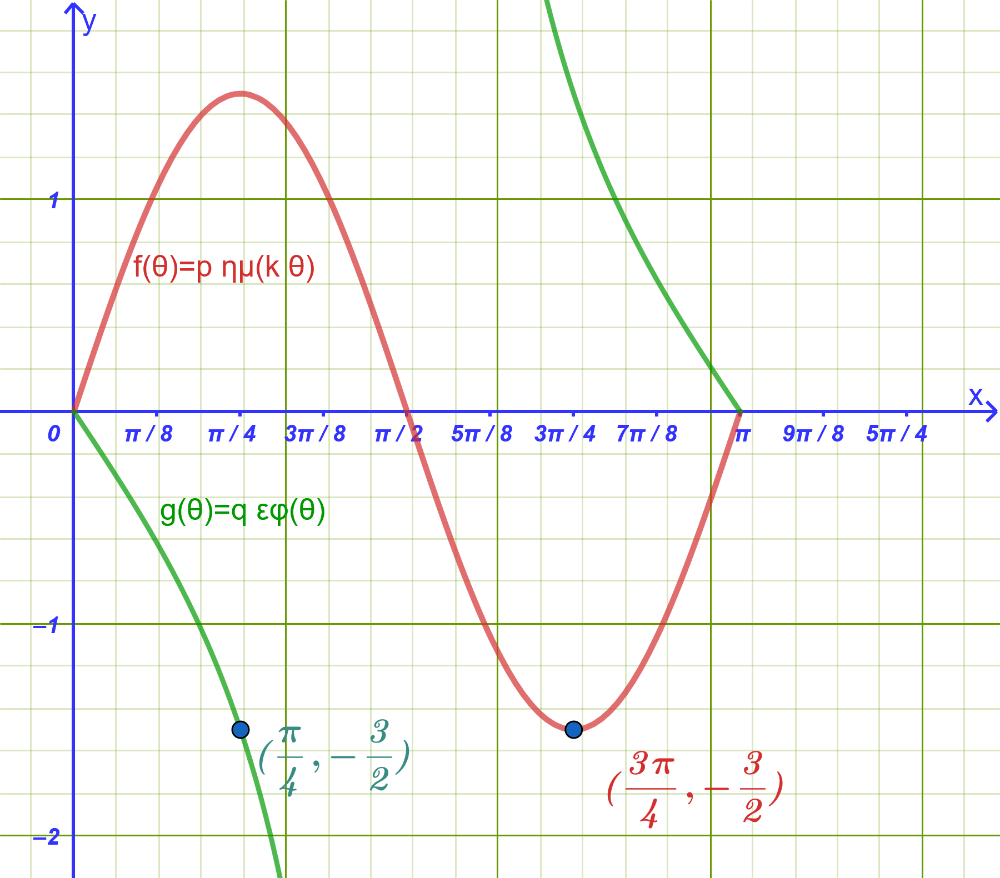
Να προσδιορίσετε τις τιμές των παραμέτρων \(p\), \(k\) και \(q\). (17 μονάδες)
Δ2. Η απομάκρυνση ενός σώματος που εκτελεί απλή αρμονική ταλάντωση δίνεται από τον τύπο \(x(t) = 0{,}1 \cdot ημ(4\pi t)\) (σε μέτρα, με \(t\) σε δευτερόλεπτα):
Να υπολογίσετε το πλάτος και την περίοδο της ταλάντωσης. (4 μονάδες)
Να υπολογίσετε την απομάκρυνση του σώματος τη χρονική στιγμή \(t = \dfrac{1}{24}\text{ s}\). (4 μονάδες)
3 ΑΝΑΛΥΤΙΚΕΣ ΛΥΣΕΙΣ ΔΙΑΓΩΝΙΣΜΑΤΟΣ
3.1 ΘΕΜΑ Α
Α1.1: Μία συνάρτηση \(f\) με πεδίο ορισμού \(A\) ονομάζεται περιοδική, όταν υπάρχει πραγματικός αριθμός \(T > 0\) τέτοιος, ώστε για κάθε \(x \in A\) να ισχύει \(x+T \in A\), \(x-T \in A\) και \(f(x+T) = f(x-T) = f(x)\). Ο θετικός αριθμός \(T\) ονομάζεται περίοδος της συνάρτησης.
Α1.2: Για τη συνάρτηση \(f(x) = \rho \cdot ημ(\omega x)\) με \(\rho, \omega > 0\):
Μέγιστη τιμή: \(M = \rho\)
Ελάχιστη τιμή: \(m = -\rho\)
Βασική περίοδος: \(T = \dfrac{2\pi}{\omega}\)
Α2:
Λάθος (Η συνάρτηση \(f(x) = συν x\) είναι άρτια με άξονα συμμετρίας τον \(y'y\), ενώ η \(ημ x\) είναι περιττή).
Σωστό (Στο διάστημα \([0, \dfrac{\pi}{2}]\), το ημίτονο αυξάνεται γνησίως από το \(0\) στο \(1\)).
Λάθος (Η βασική περίοδος της εφαπτομένης είναι \(T = \pi\)).
Σωστό (Η εφαπτομένη δεν ορίζεται στις θέσεις \(x = k\pi + \dfrac{\pi}{2}\), όπου μηδενίζεται το συνημίτονο).
Σωστό (Για \(\rho = 3\), η μέγιστη τιμή είναι \(3\) και η ελάχιστη \(-3\)).
Α3:
Στο \(x = \dfrac{\pi}{2}\): \(ημ\left(\dfrac{\pi}{2}\right) = \mathbf{1}\) (Ολικό μέγιστο).
Στο \(x = \dfrac{3\pi}{2}\): \(ημ\left(\dfrac{3\pi}{2}\right) = \mathbf{-1}\) (Ολικό ελάχιστο).
3.2 ΘΕΜΑ Β
Β1.1: Για την \(f(x) = 4ημ(3x)\):
\(\rho = 4 \implies M = \mathbf{4}\) και \(m = \mathbf{-4}\).
\(\omega = 3 \implies T = \mathbf{\dfrac{2\pi}{3}}\).
Β1.2: Για την \(g(x) = -2συν(4x)\):
Το πλάτος είναι \(|\rho| = |-2| = 2 \implies M = \mathbf{2}\) και \(m = \mathbf{-2}\).
\(\omega = 4 \implies T = \dfrac{2\pi}{4} = \mathbf{\dfrac{\pi}{2}}\).
Β1.3: Για την \(h(x) = 5ημ\left(\dfrac{x}{2}\right)\):
\(\rho = 5 \implies M = \mathbf{5}\) και \(m = \mathbf{-5}\).
\(\omega = \dfrac{1}{2} \implies T = \dfrac{2\pi}{1/2} = \mathbf{4\pi}\).
Β2.1: Για κάθε \(x \in \mathbb{R}\) ισχύει: \[-1 \le συν(5x) \le 1 \iff -2 \le -2συν(5x) \le 2\]
Προσθέτοντας \(3\) παντού: \[3 - 2 \le 3 - 2συν(5x) \le 3 + 2 \iff \mathbf{1 \le f(x) \le 5}\]
Άρα η ελάχιστη τιμή της \(f\) είναι \(1\) και η μέγιστη \(5\).
Β2.2: Ο συντελεστής του \(x\) είναι \(\omega = 5\), συνεπώς η περίοδος είναι \(T = \mathbf{\dfrac{2\pi}{5}}\).
3.3 ΘΕΜΑ Γ
Γ1: Για τη συνάρτηση \(f(x) = 3ημ(2x)\):
Πλάτος \(\rho = 3 \implies\) Μέγιστη τιμή \(M = 3\), Ελάχιστη τιμή \(m = -3\).
Βασική περίοδος: \(T = \dfrac{2\pi}{2} = \mathbf{\pi}\).
Γ2:
- Πίνακας Τιμών στο \([0, \pi]\):
| \(x\) | \(0\) | \(\dfrac{\pi}{4}\) | \(\dfrac{\pi}{2}\) | \(\dfrac{3\pi}{4}\) | \(\pi\) |
|---|---|---|---|---|---|
| \(2x\) | \(0\) | \(\dfrac{\pi}{2}\) | \(\pi\) | \(\dfrac{3\pi}{2}\) | \(2\pi\) |
| \(ημ(2x)\) | \(0\) | \(1\) | \(0\) | \(-1\) | \(0\) |
| \(f(x) = 3ημ(2x)\) | \(0\) | \(3\) | \(0\) | \(-3\) | \(0\) |
- Πίνακας Μεταβολών στο \([0, \pi]\):
| \(x\) | \(0\) | \(\dfrac{\pi}{4}\) | \(\dfrac{\pi}{2}\) | \(\dfrac{3\pi}{4}\) | \(\pi\) |
|---|---|---|---|---|---|
| \(f(x)\) | \(0\) | \(\nearrow\) \(3\) (Μέγ.) | \(\searrow\) \(0\) | \(\searrow\) \(-3\) (Ελάχ.) | \(\nearrow\) \(0\) |
Γ3: Αναζητούμε τις ρίζες της εξίσωσης \(f(x) = 0\) στο \([0, \pi]\): \[3ημ(2x) = 0 \iff ημ(2x) = 0 \iff 2x = k\pi \iff x = \dfrac{k\pi}{2}, \quad k \in \mathbb{Z}\]
Για \(k = 0 \implies x = 0 \implies \mathbf{(0,0)}\)
Για \(k = 1 \implies x = \dfrac{\pi}{2} \implies \mathbf{\left(\dfrac{\pi}{2}, 0\right)}\)
Για \(k = 2 \implies x = \pi \implies \mathbf{(\pi, 0)}\)
Τα σημεία τομής της \(C_f\) με τον άξονα \(x'x\) στο διάστημα \([0, \pi]\) είναι τα \((0,0)\), \(\left(\dfrac{\pi}{2}, 0\right)\) και \((\pi, 0)\).
3.4 ΘΕΜΑ Δ
- Δ1: Προσδιορισμός των \(p\) και \(k\) για τη συνάρτηση \(f(\theta)\)
Η συνάρτηση είναι της μορφής: \[f(\theta) = p \cdot \eta\mu(k\theta)\]
Από τη γραφική παράσταση της \(f\):
Η καμπύλη ολοκληρώνει έναν πλήρη κύκλο (περίοδο) στο διάστημα από \(0^\circ\) έως \(180^\circ\). Επομένως, η περίοδος είναι: \[T = 180^\circ\]
Γνωρίζουμε ότι ο τύπος της περιόδου (σε μοίρες) είναι \(T = \dfrac{360^\circ}{k}\). Άρα: \[\frac{360^\circ}{k} = 180^\circ \implies k = \frac{360^\circ}{180^\circ} \implies k = 2\]
Το ελάχιστο της συνάρτησης σημειώνεται στο σημείο \(\left(135^\circ, -1\dfrac{1}{2}\right) = \left(135^\circ, -\dfrac{3}{2}\right)\).
Επειδή για \(\theta = 135^\circ\) έχουμε: \[k\theta = 2 \cdot 135^\circ = 270^\circ\] και \(\eta\mu(270^\circ) = -1\), προκύπτει: \[f(135^\circ) = p \cdot \eta\mu(270^\circ) = p \cdot (-1) = -p\]
Εξισώνοντας με την τιμή του ελαχίστου: \[-p = -\frac{3}{2} \implies p = \frac{3}{2} = 1{,}5\]
Προσδιορισμός του \(q\) για τη συνάρτηση \(g(\theta)\)
Η συνάρτηση είναι της μορφής: \[g(\theta) = q \cdot \epsilon\phi\theta\]
Από τη γραφική παράσταση, η καμπύλη της \(g\) διέρχεται από το σημείο \(\left(45^\circ, -\dfrac{3}{2}\right)\).
Αντικαθιστούμε τις συντεταγμένες του σημείου στον τύπο της συνάρτησης: \[g(45^\circ) = -\frac{3}{2}\] \[q \cdot \epsilon\phi(45^\circ) = -\frac{3}{2}\]
Γνωρίζουμε ότι \(\epsilon\phi(45^\circ) = 1\), επομένως: \[q \cdot 1 = -\frac{3}{2} \implies q = -\frac{3}{2} = -1{,}5\]
Τελικές Τιμές
\[p = \frac{3}{2} = 1{,}5\] \[k = 2\] \[q = -\frac{3}{2} = -1{,}5\]
Δ2.1: Για τη συνάρτηση \(x(t) = 0{,}1 \cdot ημ(4\pi t)\):
Πλάτος ταλάντωσης: \(A = \mathbf{0{,}1\text{ m}}\) (ή \(10\text{ cm}\)).
Περίοδος ταλάντωσης: \(T = \dfrac{2\pi}{\omega} = \dfrac{2\pi}{4\pi} = \mathbf{\dfrac{1}{2}\text{ s}} = 0{,}5\text{ s}\).
Δ2.2: Αντικαθιστούμε \(t = \dfrac{1}{24}\text{ s}\) στον τύπο της απομάκρυνσης: \[x\left(\dfrac{1}{24}\right) = 0{,}1 \cdot ημ\left(4\pi \cdot \dfrac{1}{24}\right) = 0{,}1 \cdot ημ\left(\dfrac{\pi}{6}\right) = 0{,}1 \cdot \dfrac{1}{2} = \mathbf{0{,}05\text{ m}} \ (\text{ή } 5\text{ cm})\]
ΚΑΛΗ ΜΕΛΕΤΗ!